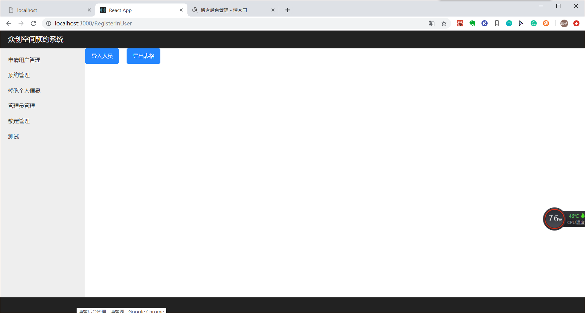
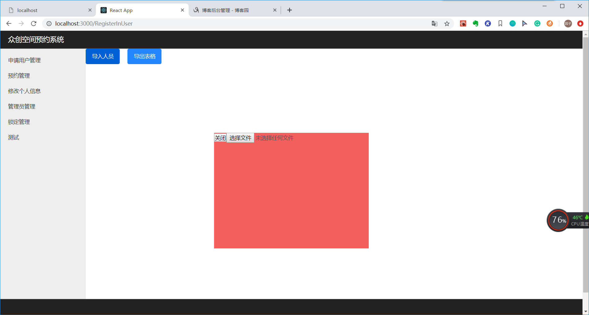

react的弹出层不同于以往的DOM编程，我们知道，在DOM中，弹出层事件绑定在对应的节点上即可，但是在react中，往往只能实现父子之间的传递控制，显然，弹出层的层级不符合此关系。
在这里我们需要使用React官方的portals
portals可以帮助我们将子节点插入到父节点层级之外的地方
注：官方文档使用的是class，我在这里使用的是react hook
在react
react hook
useEffect是了react生命周期中的componentDidMount、componentDidUpdate以及componentWillUnMount三个钩子函数的组合。
useEffect有两个参数useEffect第二个参数为空数组相当于在componentDidMount周期执行一次useEffect第二个参数为含有某种state的数组相当于只有在这个state发生改变的时候才执行useEffect返回一个函数相当于在componentWillUnMount周期执行一次1.首先，选择要插入弹出层的DOM节点，在这里我参照官方文档将整个项目分成了app-root和model-root两层，我将把弹出层插入到model-root节点中
function App(){
return(
<React.Fragment>
<div id={"app-root"}>
<Router/>
</div>
<div id={"model-root"}></div>
</React.Fragment>
)
}
export default App;2.实现弹出层
我们按照官方文档，先生成一个节点el作为存放我们子节点的容器，并执行ReactDOM.createPortal
ReactDOM.createPortal(child, container)我们需要先将我们的el节点插入选定的DOM节点，然后再将portal元素插入DOM树中，故我们先用hook在componentDidMount阶段将el插入DOM
（1）首先获取我们要插入的DOM节点id=model-root
const modelRoot = document.getElementById('model-root');（2）创建一个存放子节点的元素el
const [el,changEl] = useState(document.createElement('div'));（3）在componentDidMount阶段将el节点插入model-root
//初始化工作
useEffect(()=>{
modelRoot.appendChild(el);
},[])（4）渲染组件，执行createPortal方法
return ReactDOM.createPortal((
<Content closeModel={props.closeModel}/>
), el);（5）在componentWillUnMount阶段移除我们的el节点
//清理工作
useEffect(()=>{
return ()=>{
modelRoot.innerHTML="";
}
})完整代码如下：
import React,{useState,useEffect} from 'react';
import './Model.css';
import ReactDOM from "react-dom";
import ExcelUtil from '../../utils/excelUtil';
function Content(props) {
return(
<div className={'cover'}>
<button onClick={props.closeModel}>关闭</button>
<input type='file' accept='.xlsx, .xls' onChange={(e)=>{ExcelUtil.importExcel(e)} }/>
</div>
)
}
function Model(props){
const appRoot = document.getElementById('app-root');
const modelRoot = document.getElementById('model-root');
const [el,changEl] = useState(document.createElement('div'));
//初始化工作
useEffect(()=>{
modelRoot.appendChild(el);
},[])
//清理工作
useEffect(()=>{
return ()=>{
modelRoot.innerHTML="";
}
})
return ReactDOM.createPortal((
<Content closeModel={props.closeModel}/>
), el);
}
export default Model;这样子子元素就出现在了我们想要的DOM层级中
3.在调用页中引入我们的Model并定义相关触发事件，这些与子节点向父节点的方式传值无异
{(isShowPop == true)?<Model isShow={isShowPop} closeModel={handleInClick}/>:null}
function RegisterInUser() {
const [isShowPop,changeShowPop] = useState(false);
function handleInClick(){
changeShowPop(!isShowPop);
}
return(
<React.Fragment>
//这里是使用的地方
{(isShowPop == true)?<Model isShow={isShowPop} closeModel={handleInClick}/>:null}
<button className="ui-button ui-button-primary" onClick={handleInClick}>导入人员</button>
<button
className="ui-button ui-button-primary outExcelBtn"
type="primary"
onClick={() => {ExcelUtil.exportExcel(initColumn, attendanceInfoList,"人员名单.xlsx")}}>
导出表格
</button>
</React.Fragment>
)
}
export default RegisterInUser;

